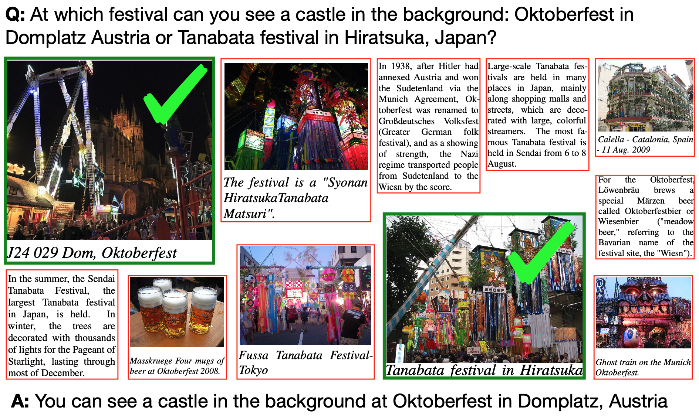
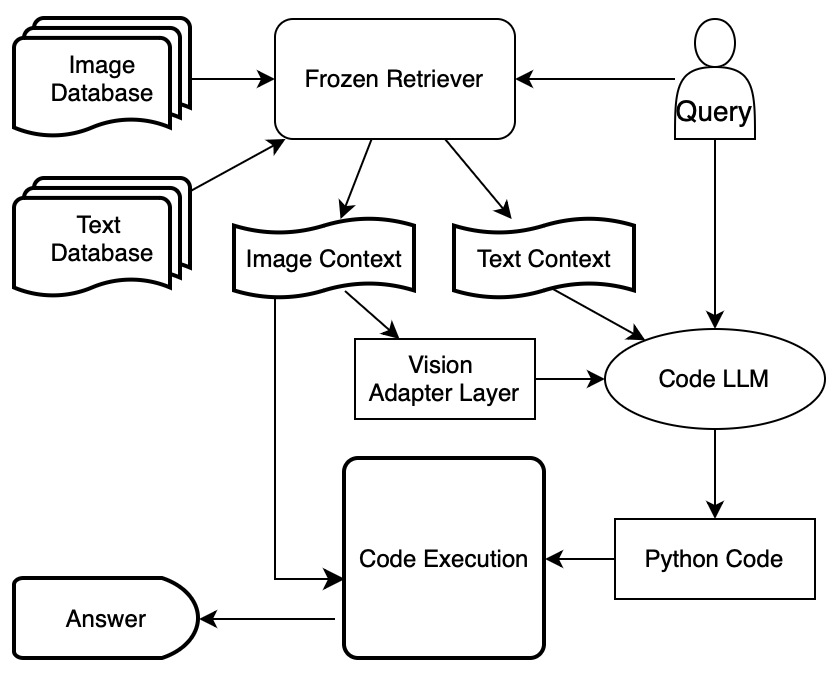

Members: Yunzhong (Shawn) Xiao, Andy Liu, Alex Xie, Leke Onilude
Multimodal RAG system with Visual Programming
The project aims to enhance multimodal question-answering capabilities by developing a model that programmatically integrates textual and visual information to generate accurate, context-aware responses.
WebQA Dataset Overview

- Purpose & Composition: Designed to facilitate multimodal question answering by combining text and images, simulating how humans utilize multiple sources to find answers.
- Multimodal Nature: Requires systems that can process and infer information from both textual content and visual images.
- Challenges Addressed: Focuses on the complexity of online search, emphasizing the extraction of relevant information from an abundance of multimodal data.
- Dataset Specifics: Includes comprehensive training, validation, and test sets, supporting the development of robust models capable of multimodal reasoning.
- Evaluation Metrics: Uses recall, F1 score, and BART Score to evaluate the accuracy, relevance, and fluency of model-generated answers.
Proposed Model: Visual Programming + Image Adapter Layer

Our proposed model combines visual programming with an adaptive image understanding layer to enhance the precision and efficiency of multimodal question-answering systems.
- Core Concept: Integrates a code generation framework with a unique image adapter layer, enhancing the model's ability to reason with multimodal data.
- Functionality: Generates executable Python code for query responses, utilizing pre-trained encoders for image comprehension and a decoder for code synthesis.
- Expected Outcomes: Aims to outperform existing approaches in accuracy for visually intensive questions and offers greater interpretability and adaptability in multimodal reasoning.